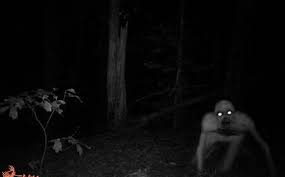

Forest so cool yeah!?
Pentiga Jupah Forest is only 100 feet north of your house. To get there, simply walk backward while acting strangely. You're guaranteed to find it!
Pentiga Jupah Forest is a supernatural forest originating from Masothan mythology which is said to be filled with invisible creatures that can lead you astray and if you have entered this forest then, what will happen is that you will not find a way out for the rest of your life.
It is said that there was an emperor from an unnamed empire who found himself in the Pentiga Jupah forest. As a result, the emperor tried to find a way out, but unfortunately, death came to the emperor.
If you want to find other room branches, then select the room below:
Deep Hell
Spatotets
Teddy
But if you think that you don't want to go into a deeper room like before, then my choice is:
Main Menu
It is said that before the existence of a supernatural forest called Pentiga Jupah, there was a super advanced civilization that had everything, namely, the "Atturliies" Civilization, a human civilization that was different from its time, this civilization was very rich and advanced even at the level of current technology or even the future. The "Atturliies" Civilization is estimated to have existed since 18 million years ago, however, the "Atturliies" Civilization ended 3000 years ago for no clear reason, which finally the former place became the supernatural Pentiga Jupah forest.
